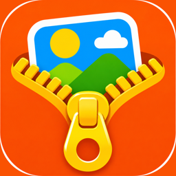
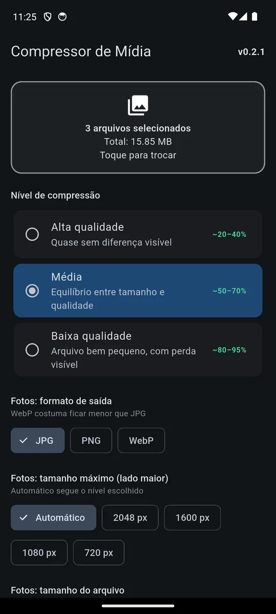
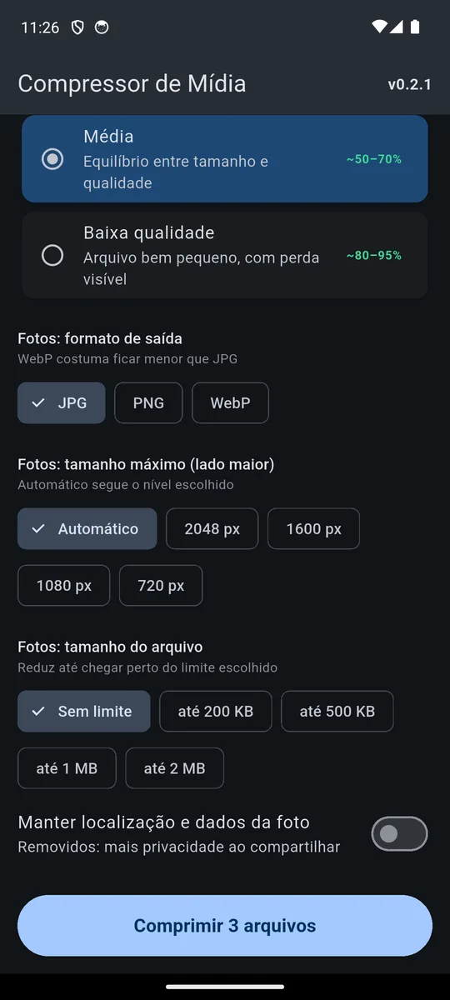
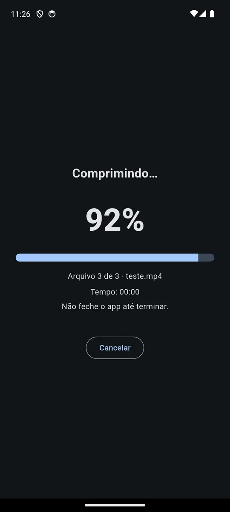
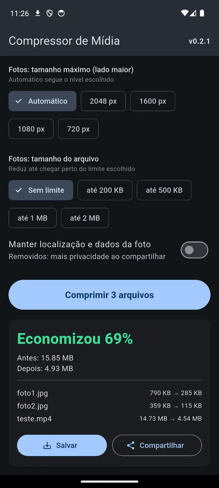

App para Android
Compressor de Mídia
Diminua o tamanho de fotos e vídeos do seu celular em poucos toques, escolhendo o quanto de qualidade manter.
O que ele faz
Três níveis de compressão
Alta qualidade (quase sem diferença), média (equilíbrio) ou baixa (arquivo bem pequeno). Serve para fotos e vídeos.
Vários arquivos de uma vez
Escolha várias fotos e vídeos juntos. O app comprime em fila e mostra o progresso geral.
Formato da foto
Salve em JPG, PNG ou WebP. O WebP costuma gerar arquivos menores.
Limite de tamanho
Peça uma foto de até 200 KB, 500 KB, 1 MB ou 2 MB, e o app reduz até chegar perto do limite. Também dá para limitar o lado maior em pixels.
Mais privacidade
Por padrão, a localização e os outros dados escondidos na foto são removidos. Se quiser, você pode manter.
Progresso e notificação
Uma tela mostra a porcentagem e deixa cancelar. A compressão continua com o app em segundo plano, com uma notificação de andamento.
Resultado claro
No fim você vê quanto economizou, antes e depois, e pode salvar na galeria ou compartilhar.
Tudo no seu aparelho
Nada é enviado para a internet. Seus arquivos não saem do celular.
Como é o app

Escolha as fotos e os vídeos e o nível de compressão 
Ajuste formato, tamanho e limite de peso da foto 
Acompanhe o progresso e cancele quando quiser 
Veja quanto economizou, salve ou compartilhe